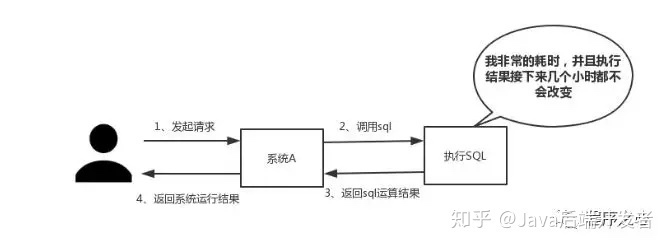
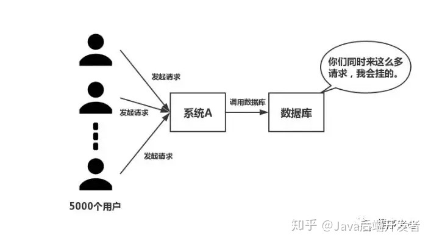
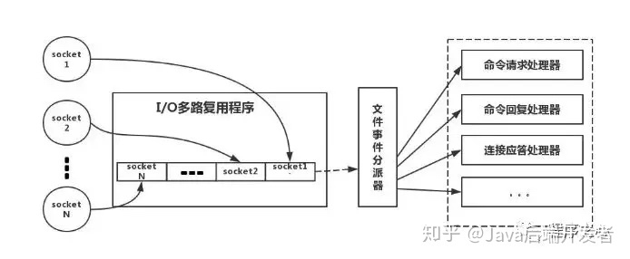

考虑到绝大部分写业务的程序员，在实际开发中使用 Redis 的时候，只会 Set Value 和 Get Value 两个操作，对 Redis 整体缺乏一个认知。
本文围绕以下几点进行阐述：
为什么使用 Redis？
我觉得在项目中使用 Redis，主要是从两个角度去考虑：性能和并发。
当然，Redis 还具备可以做分布式锁等其他功能，但是如果只是为了分布式锁这些其他功能，完全还有其他中间件，如 ZooKpeer 等代替，并不是非要使用 Redis。因此，这个问题主要从性能和并发两个角度去答。
如下图所示，我们在碰到需要执行耗时特别久，且结果不频繁变动的 SQL，就特别适合将运行结果放入缓存。这样，后面的请求就去缓存中读取，使得请求能够迅速响应。

- 并发：
如下图所示，在大并发的情况下，所有的请求直接访问数据库，数据库会出现连接异常。

这个时候，就需要使用 Redis 做一个缓冲操作，让请求先访问到 Redis，而不是直接访问数据库。
使用 Redis 有什么缺点？
大家用 Redis 这么久，这个问题是必须要了解的，基本上使用 Redis 都会碰到一些问题，常见的也就几个。
回答主要是四个问题：
- 缓存和数据库双写一致性问题
- 缓存雪崩问题
- 缓存击穿问题
- 缓存的并发竞争问题
这四个问题，我个人觉得在项目中是常遇见的，具体解决方案，后文给出。
单线程的 Redis 为什么这么快？
这个问题是对 Redis 内部机制的一个考察。根据我的面试经验，很多人都不知道 Redis 是单线程工作模型。所以，这个问题还是应该要复习一下的。
回答主要是以下三点：
- 纯内存操作
- 单线程操作，避免了频繁的上下文切换
- 采用了非阻塞 I/O 多路复用机制
多路复用在 Redis 中的应用，如图所示：

简单来说，就是我们的 redis-client 在操作的时候，会产生具有不同事件类型的 Socket。
在服务端，有一段 I/O 多路复用程序，将其置入队列之中。然后，文件事件分派器，依次去队列中取，转发到不同的事件处理器中。
需要说明的是，这个 I/O 多路复用机制，Redis 还提供了 select、epoll、evport、kqueue 等多路复用函数库，大家可以自行去了解。
Redis 的数据类型以及每种数据类型的使用场景
是不是觉得这个问题很基础？我也这么觉得。然而根据面试经验发现，至少百分之八十的人答不上这个问题。
建议，在项目中用到后，再类比记忆，体会更深，不要硬记。基本上，一个合格的程序员，五种类型都会用到。
这个没啥好说的，最常规的 set/get 操作，Value 可以是 String 也可以是数字。一般做一些复杂的计数功能的缓存。
这里 Value 存放的是结构化的对象，比较方便的就是操作其中的某个字段。
我在做单点登录的时候，就是用这种数据结构存储用户信息，以 CookieId 作为 Key，设置 30 分钟为缓存过期时间，能很好的模拟出类似 Session 的效果。
使用 List 的数据结构，可以做简单的消息队列的功能。另外还有一个就是，可以利用 lrange 命令，做基于 Redis 的分页功能，性能极佳，用户体验好。
因为 Set 堆放的是一堆不重复值的集合。所以可以做全局去重的功能。为什么不用 JVM 自带的 Set 进行去重？
因为我们的系统一般都是集群部署，使用 JVM 自带的 Set，比较麻烦，难道为了一个做一个全局去重，再起一个公共服务，太麻烦了。
另外，就是利用交集、并集、差集等操作，可以计算共同喜好，全部的喜好，自己独有的喜好等功能。
Sorted Set多了一个权重参数 Score，集合中的元素能够按 Score 进行排列。
可以做排行榜应用，取 TOP N 操作。Sorted Set 可以用来做延时任务。最后一个应用就是可以做范围查找。
Redis 的过期策略以及内存淘汰机制
这个问题相当重要，到底 Redis 有没用到家，这个问题就可以看出来。
比如你 Redis 只能存 5G 数据，可是你写了10G，那会删 5G 的数据。怎么删的，这个问题思考过么？
还有，你的数据已经设置了过期时间，但是时间到了，内存占用率还是比较高，有思考过原因么?
Redis 采用的是定期删除+惰性删除策略。
为什么不用定时删除策略
定时删除，用一个定时器来负责监视 Key，过期则自动删除。虽然内存及时释放，但是十分消耗 CPU 资源。
在大并发请求下，CPU 要将时间应用在处理请求，而不是删除 Key，因此没有采用这一策略。
定期删除 + 惰性删除是如何工作
定期删除，Redis 默认每个 100ms 检查，是否有过期的 Key，有过期 Key 则删除。
需要说明的是，Redis 不是每个 100ms 将所有的 Key 检查一次，而是随机抽取进行检查(如果每隔 100ms，全部 Key 进行检查，Redis 岂不是卡死)。
因此，如果只采用定期删除策略，会导致很多 Key 到时间没有删除。于是，惰性删除派上用场。
也就是说在你获取某个 Key 的时候，Redis 会检查一下，这个 Key 如果设置了过期时间，那么是否过期了？如果过期了此时就会删除。
采用定期删除+惰性删除就没其他问题了么?
不是的，如果定期删除没删除 Key。然后你也没即时去请求 Key，也就是说惰性删除也没生效。这样，Redis的内存会越来越高。那么就应该采用内存淘汰机制。
在 redis.conf 中有一行配置：
# maxmemory-policy volatile-lru
该配置就是配内存淘汰策略的(什么，你没配过？好好反省一下自己)：
noeviction：当内存不足以容纳新写入数据时，新写入操作会报错。应该没人用吧。
allkeys-lru：当内存不足以容纳新写入数据时，在键空间中，移除最近最少使用的 Key。推荐使用，目前项目在用这种。
allkeys-random：当内存不足以容纳新写入数据时，在键空间中，随机移除某个 Key。应该也没人用吧，你不删最少使用 Key，去随机删。
volatile-lru：当内存不足以容纳新写入数据时，在设置了过期时间的键空间中，移除最近最少使用的 Key。这种情况一般是把 Redis 既当缓存，又做持久化存储的时候才用。不推荐。
volatile-random：当内存不足以容纳新写入数据时，在设置了过期时间的键空间中，随机移除某个 Key。依然不推荐。
volatile-ttl：当内存不足以容纳新写入数据时，在设置了过期时间的键空间中，有更早过期时间的 Key 优先移除。不推荐。
PS：如果没有设置 expire 的 Key，不满足先决条件(prerequisites)；那么 volatile-lru，volatile-random 和 volatile-ttl 策略的行为，和 noeviction(不删除) 基本上一致。
Redis 和数据库双写一致性问题
一致性问题是分布式常见问题，还可以再分为最终一致性和强一致性。数据库和缓存双写，就必然会存在不一致的问题。
答这个问题，先明白一个前提。就是如果对数据有强一致性要求，不能放缓存。我们所做的一切，只能保证最终一致性。
另外，我们所做的方案从根本上来说，只能说降低不一致发生的概率，无法完全避免。因此，有强一致性要求的数据，不能放缓存。
回答：首先，采取正确更新策略，先更新数据库，再删缓存。其次，因为可能存在删除缓存失败的问题，提供一个补偿措施即可，例如利用消息队列。
如何应对缓存穿透和缓存雪崩问题
这两个问题，说句实在话，一般中小型传统软件企业，很难碰到这个问题。如果有大并发的项目，流量有几百万左右。这两个问题一定要深刻考虑。
缓存穿透，即黑客故意去请求缓存中不存在的数据，导致所有的请求都怼到数据库上，从而数据库连接异常。
缓存穿透解决方案：
利用互斥锁，缓存失效的时候，先去获得锁，得到锁了，再去请求数据库。没得到锁，则休眠一段时间重试。
采用异步更新策略，无论 Key 是否取到值，都直接返回。Value 值中维护一个缓存失效时间，缓存如果过期，异步起一个线程去读数据库，更新缓存。需要做缓存预热(项目启动前，先加载缓存)操作。
提供一个能迅速判断请求是否有效的拦截机制，比如，利用布隆过滤器，内部维护一系列合法有效的 Key。迅速判断出，请求所携带的 Key 是否合法有效。如果不合法，则直接返回。
缓存雪崩，即缓存同一时间大面积的失效，这个时候又来了一波请求，结果请求都怼到数据库上，从而导致数据库连接异常。
缓存雪崩解决方案：
然后细分以下几个小点：从缓存 A 读数据库，有则直接返回；A 没有数据，直接从 B 读数据，直接返回，并且异步启动一个更新线程，更新线程同时更新缓存 A 和缓存 B。
如何解决 Redis 的并发竞争 Key 问题
这个问题大致就是，同时有多个子系统去 Set 一个 Key。这个时候大家思考过要注意什么呢？
需要说明一下，我提前百度了一下，发现答案基本都是推荐用 Redis 事务机制。
我并不推荐使用 Redis 的事务机制。因为我们的生产环境，基本都是 Redis 集群环境，做了数据分片操作。
你一个事务中有涉及到多个 Key 操作的时候，这多个 Key 不一定都存储在同一个 redis-server 上。因此，Redis 的事务机制，十分鸡肋。
如果对这个 Key 操作，不要求顺序
这种情况下，准备一个分布式锁，大家去抢锁，抢到锁就做 set 操作即可，比较简单。
如果对这个 Key 操作，要求顺序
假设有一个 key1，系统 A 需要将 key1 设置为 valueA，系统 B 需要将 key1 设置为 valueB，系统 C 需要将 key1 设置为 valueC。
期望按照 key1 的 value 值按照 valueA > valueB > valueC 的顺序变化。这种时候我们在数据写入数据库的时候，需要保存一个时间戳。
假设时间戳如下：
系统A key1 {valueA 3:00}
系统B key1 {valueB 3:05}
系统C key1 {valueC 3:10}
那么，假设这会系统 B 先抢到锁，将 key1 设置为{valueB 3:05}。接下来系统 A 抢到锁，发现自己的 valueA 的时间戳早于缓存中的时间戳，那就不做 set 操作了，以此类推。
其他方法，比如利用队列，将 set 方法变成串行访问也可以。总之，灵活变通。
总结
本文对 Redis 的常见问题做了一个总结。大部分是自己在工作中遇到，以及之前面试别人的时候，爱问的一些问题。